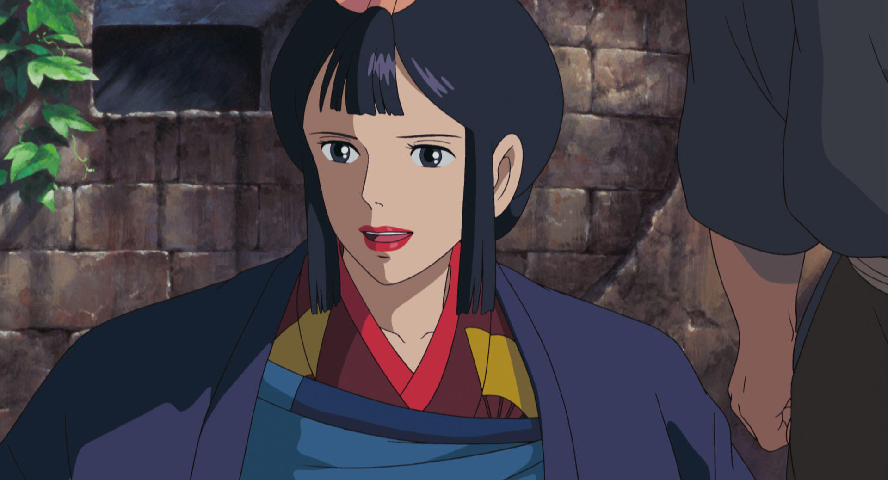

阿席達卡（アシタカ）
本片男主角，原是一位繼承著領導者的血統、性格正直、寡言、箭術優異的蝦夷少年。
為了保護自己的部落而受到化為邪魔神的山豬神拿各給予的詛咒，之後為了尋找解開詛咒方法前往西方。
在過程中來到一個名為達達拉城的煉鐵據地，認識被犬神莫娜扶養成人的小桑的同時得知達達拉城與森林結下梁子的源頭，之後被捲入該城鎮對抗森林神祇與神靈的戰爭，與小桑並肩作戰保護森林和山獸神，最後決定居住在達達拉城並時常騎著亞克路來探望小桑。

小桑（サン）
女主角。出生時被親生父母給遺棄在森林被山犬神族的首領莫娜視為女兒般來撫養成人的少女(因為親生父母在砍伐森林時遭受莫娜一族的攻擊，他們為保命便將她給拋棄)，之後將莫娜一族視為家人，人類視為仇人的物件。
非常關心著森林的一切事物，並且憎恨入侵破壞森林的黑帽大人與其他人類，並視自身為山犬而非人類，更對阿席達卡保持著警戒心的狀態。充滿著對人類的仇恨，身配利器專門刺殺破壞森林的人類與他們勢不兩立。
剛開始對阿席達卡充滿敵意，但最終被他的真誠與勇敢所感動，漸漸的對阿席達卡的態度有所好轉。事件落幕後因無法放下對人類的仇恨，選擇回歸森林生活。 外觀上平時以披帶著狼毛皮及掛著赤色的奇異造型面具打扮，並在臉上刺有紅色圖像的刺青。

黑帽大人
煉鐵據地達達拉城的領導者，性格冷靜又有能力，受眾人敬仰的女首領。
在《誕生物語》裡透露，出身於貧困家庭，過去曾遭受到人口買賣嫁給一個外國強盜首領，但由於由於強盜的殘暴下殺害自己的丈夫帶著財寶以及一路跟隨的部下權三回到日本。
曾在建造達達拉城砍伐森林佔為領地，而與森林中的動物神祇及莫娜一族和小桑結下梁子，其實一直保護著婦女和許多弱勢的病患，可是卻被朝廷給利用而與山獸神兩敗俱傷。一隻手臂還被莫娜的頭顱咬斷，最後領悟到自己的錯誤後帶領村人們重建達達拉城。
山獸神（シシ神)
平時以巨形麒麟的鹿外觀、以及類似鳥足的四肢、與狒狒的面孔模樣現身的神祇，具備能給予生物是否能存活的力量，曾出面救下阿席達卡的性命還有超渡化為邪魔的乙事主與拿各的怨靈。
祂在午夜裡會變化成散發螢光、半透明樣的「螢光巨人」（デイダラボッチ）。